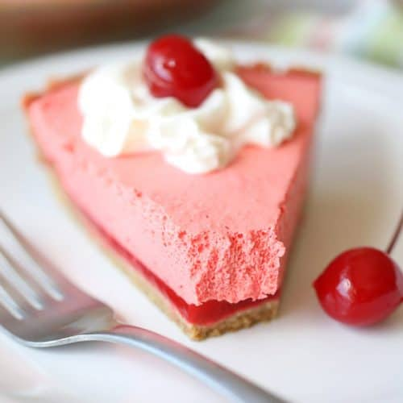

Jell-O Pie

Ingredients
- 1 3oz box of strawberry Jell-o
- 1 cup boiling water
- 1 cup ice
- 1 8oz containter of Cool Whip
- 1 graham cracker pie crust
Steps
- Combine Jell-O powder with 1 cup boiling water. Stir until completely dissolved.
- Add 1 cup of ice to bowl. Stir until ice is melted.
- Refrigerate for 15 minutes.
- Stir in Cool Whip, until evenly mixed. Pie should be a consistent pastel pink color.
- Pour into graham cracker crust.
- Refrierate for 3 hours, or until completely set.